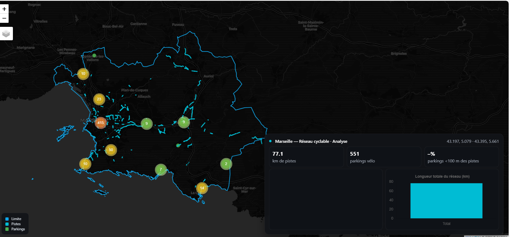
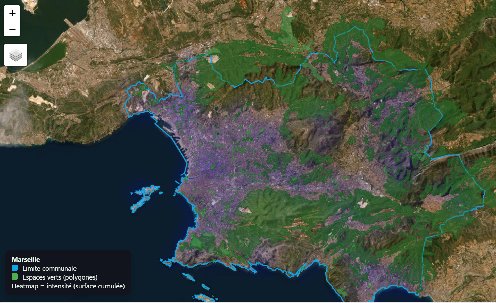

ERWAN N'GUESSAN
Passionné par la géomatique et la télédétection, je suis actuellement à la recherche d’un stage ou d’une alternance me permettant de mettre en pratique mes compétences en analyse spatiale, traitement d’images satellites et développement d’applications cartographiques. Étudiant en Master Géomatique et Modélisation Spatiale à l’Université Aix-Marseille, je m’intéresse particulièrement aux applications de la télédétection pour la gestion durable des ressources naturelles, la modélisation environnementale et l’innovation géospatiale. Géomaticien / Data Analyste SIG Download CVA PRPOS DE MOI
ERWAN N'GUESSAN Titulaire d'un Master en géographie physique,je suis actuellement à Aix-Marseille Université pour renforcer mes capacités pratiques. Passionné par la géomatique et la télédétection, j'ai un fort intérêt pour la forêt, l’aménagement du territoire et l’urbanisme.
| Domaine | Expérience | projets | Années |
|---|---|---|---|
| Automatisation cartographique | 2 ans | 4 | 2019–2024 |
| Web mapping | 1 ans | 2 | 2020–2024 |
| Analyse de données SIG | 2–3 ans | 4 | 2022–2024 |
SERVICES
Automatisation des tâches SIG
Utilisation de la programmation Python pour automatiser les opérations SIG : analyse, traitement et visualisation de données géospatiales. Amélioration de l’efficacité via la création d’outils et d’applications personnalisées répondant à des besoins SIG spécifiques.
En savoir plus…Web Mapping
Conception de cartes web interactives (Leaflet, Mapbox, ArcGIS JS) avec légendes dynamiques, filtres, géocodage et intégration d’API. Déploiement de plateformes multi-supports sécurisées et performantes.
En savoir plus…Ingénierie des données
Création de pipelines de données SIG robustes : collecte, nettoyage, validation et transformation (ETL) de données spatiales (GeoJSON, PostGIS). Automatisation Python (Pandas, GeoPandas, FME) et exposition via API pour dashboards et applications web.
En savoir plus…PROJECTS

Mobilité urbaine et Pistes & parkings vélo (Marseille)
